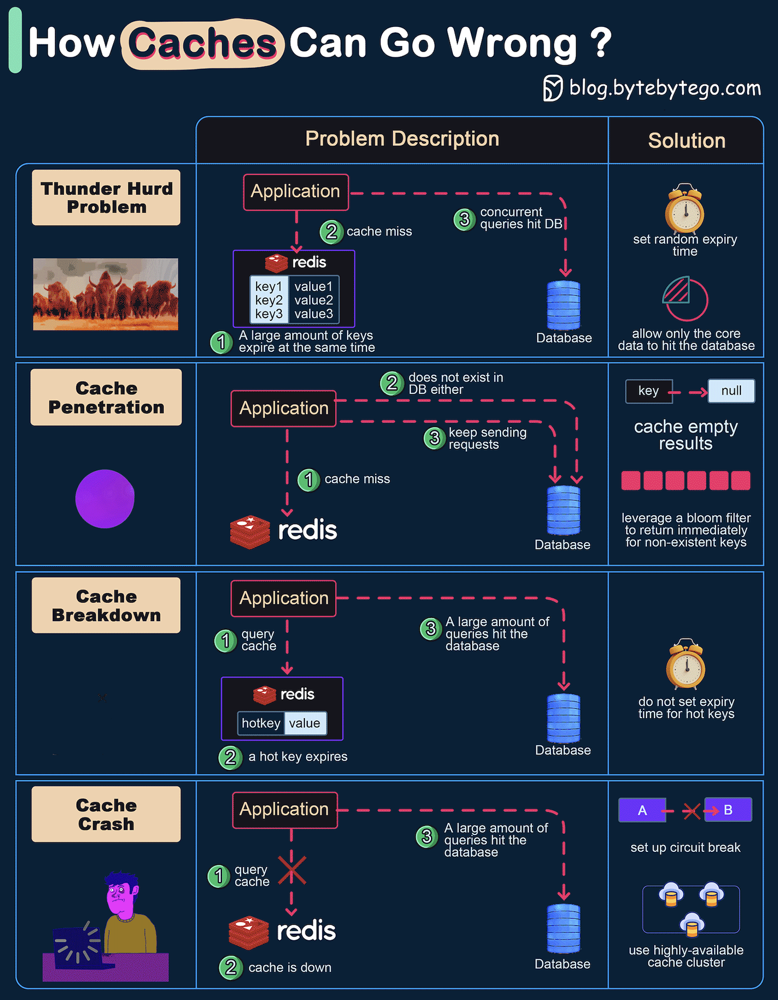

The diagram above shows 4 typical cases where caches can go wrong and their solutions.
This happens when a large number of keys in the cache expire at the same time. Then the query requests directly hit the database, which overloads the database.
There are two ways to mitigate this issue: one is to avoid setting the same expiry time for the keys, adding a random number in the configuration; the other is to allow only the core business data to hit the database and prevent non-core data to access the database until the cache is back up.
This happens when the key doesn’t exist in the cache or the database. The application cannot retrieve relevant data from the database to update the cache. This problem creates a lot of pressure on both the cache and the database.
To solve this, there are two suggestions.
This is similar to the thunder herd problem. It happens when a hot key expires. A large number of requests hit the database.
Since the hot keys take up 80% of the queries, we do not set an expiration time for them.
This happens when the cache is down and all the requests go to the database.
There are two ways to solve this problem.